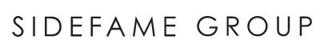

ABOUT FENIX LOGISTIC SERVICES
30 年信譽傳承 ｜ 集團雄厚實力
源於 1994 年，我們以守護每一個品牌的信任為使命，為跨國零售精品及香港新世代電商提供最穩健的供應鏈基石。
GROUP HERITAGE
FENIX GROUP 強大後盾
威黃物流服務有限公司為 FENIX GROUP HOLDINGS LTD 核心成員。母公司三黃集團自 1970 年在香港創立，深耕亞太高端消費市場逾 50 年，業務橫跨高端時裝零售（Sidefame 華鐙）、精品生活超市（city'super）及專業第三方物流（FLS），為 FLS 注入深厚的國際化視野與極致的品質追求。
FENIX GROUP 集團
關聯零售旗艦

30 年來，我們長期為 ANTEPRIMA、Marimekko、ATSURO TAYAMA 等國際奢侈品與時尚零售品牌管理極其嚴格的門市補貨及進出口物流，將「頂級零售品質」深植於每一項操作流程中。
1994
紮根香港，始終如一
三黃集團於 1994 年成立威黃物流（FLS），率先引入日本先進 3PL 物流理念，深耕物流逾 30 年。
✓ 總部位址：香港葵涌梨木道88號達利中心5樓
✓ 基建設施：逾 120,000 平方呎多溫區現代化基地
✓ 科技驅動：貨倉 ERP 查貨系統及智慧 API 串接
OUR VALUES
服務以誠 · 真摰真心
在 FLS，我們堅信物流不只是貨物的搬運，更是承載創業者心血與顧客期待的信任紐帶。無論您是每月出貨數十件的小型手作店，抑或每日數千單的跨國企業，我們皆以誠相待，竭盡全力。